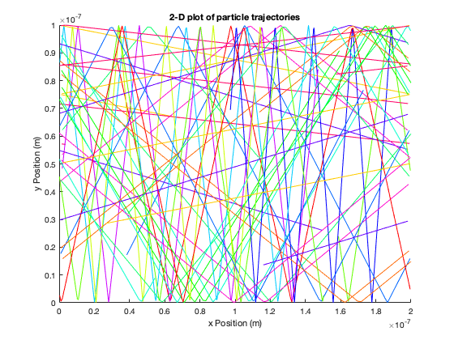
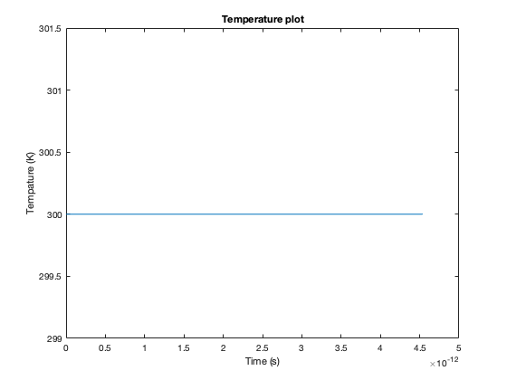

Contents
Assignment - 1 Part1:Electron Modelling
%The following code creates the report for part 1 %Introduction %The purpose of assignment 1 was to modeling the carriers as a %population of electrons in an N-type Si semiconductor crystal. For part#1 %of the assignment the initial velocity of the electrons was set to %the thermal velocity moving in a random direction. The x direction used %a periodic boundary condition and the y direction used a specular %reflection boundary condition. First the thermal velocity and mean free %path where calculated using parameters given in the Assignment %instructions.Next the simulation script was run which creates %a 2-D plot of particle trajectories and Temperature plot over time. clear all clc close all %determines thermal velocity and mean free path thermal_velocityandMFP_calc %creates a 2-D plot of particle trajectories sim_part1_trajectories %creates a Temperature plot over time sim_part1_Tempature %Part 1 conclusion %The results of the part 1 script are as I expected. The electron %trajectories match the intended x and y boundary conditions. %The temperature plot shows a constant temperature of 300 K, %which makes sense given that the velocity of the electrons was set %to the thermal velocity moving in a random direction. %The thermal velocity was calculated to be 132212.04 m/s. %The mean free path was calculated to be 2.6442e-08 m.
The thermal velocity is 132212.04 m/s The mean free path is 2.6442e-08 m 